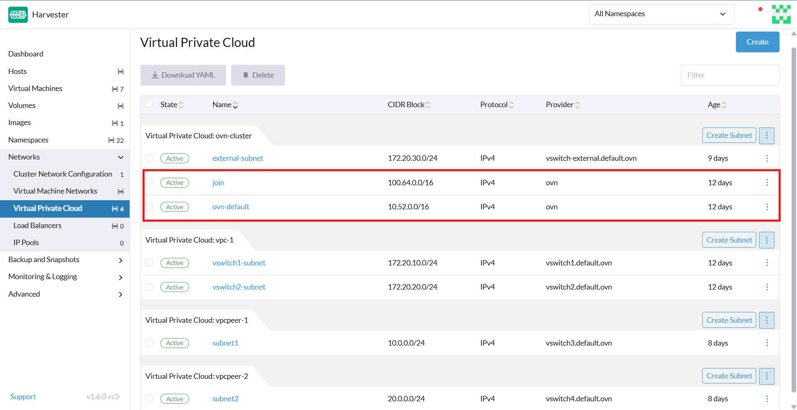

虚拟私有云
|
所有使用 Kube-OVN 的功能都被视为实验性功能。有关实验性功能的更多信息，请参见 功能标签。 |
虚拟私有云 (VPC) 是一个逻辑上隔离的网络，提供对云基础设施中 IP 地址、子网、路由表、防火墙和网关的完全控制。VPC 允许安全和可扩展地部署虚拟化资源，如计算、存储和容器服务。
下表概述了 VPC 的关键组件：
| 组件 | 说明 |
|---|---|
VPC |
具有用户定义的 IP CIDR 范围的顶级网络空间 |
subnet |
VPC IP 空间的细分；可以是公共或私有的 |
路由表 |
定义 VPC 内部和外部的流量路由规则 |
互联网网关 |
为公共子网启用外部互联网访问 |
NAT 网关 |
允许私有子网访问互联网（仅限出站） |
安全组 |
虚拟防火墙，控制每个实例的入站和出站流量 |
VPC 对等连接 |
不同 VPC 或本地网络之间的可选对等或混合连接 |
SUSE Virtualization 和 Kube-OVN 集成架构
下图说明了 VPC、子网、覆盖网络和虚拟机在 SUSE Virtualization 中与 Kube-OVN 的逻辑连接。该架构包括公共和私有子网，允许将面向互联网的流量与内部资源分开。此外，该架构支持在集群中可扩展的、隔离的 L3 和 L2 网络结构。
[ VPC: vpc-1 ]
│
┌─────────────────────┴─────────────────────┐
│ │
[ Subnet: vswitch1-subnet ] [ Subnet: vswitch2-subnet ]
CIDR: 172.20.10.0/24 CIDR: 172.20.20.0/24
Gateway: 172.20.10.1 Gateway: 172.20.20.1
│ │
[ Overlay Network: vswitch1 ] [ Overlay Network: vswitch2 ]
│ │
┌────────┴────────┐ ┌────────┴────────┐
│ │ │ │
[VM: vm1-vswitch1] [VM: vm2-vswitch1] [VM: vm1-vswitch2]
IP: 172.20.10.X IP: 172.20.10.Y IP: 172.20.20.Z
| 组件 | 平台 | 逻辑责任 |
|---|---|---|
Kube-OVN |
顶级 L3 域，管理子网分组 |
|
Kube-OVN |
CIDR 分配、路由、网关、防火墙规则 |
|
SUSE Virtualization |
L2 虚拟交换机（OVS 桥接），映射到子网 |
|
SUSE Virtualization |
运行计算工作负载，连接到覆盖网络 |
该架构具有以下关键特征：
-
Kube-OVN创建VPC及其子网。
每个子网包括CIDR和网关IP，并绑定到覆盖网络（作为提供者）。Kube-OVN 强制子网与覆盖网络之间进行一对一映射，以避免路由不明确、流量冲突和隔离问题。
-
SUSE Virtualization定义覆盖网络。
每个覆盖网络在Kube-OVN中被视为提供者。当您在 SUSE Virtualization UI 上创建子网时，可在 子网：创建 屏幕上的 提供者 列表中选择这些覆盖网络（类型：
OverlayNetwork）。 -
SUSE Virtualization提供连接到覆盖网络的虚拟机。
每个虚拟机在启动后使用Kube-OVN IPAM请求IP地址。虚拟机从关联的子网接收其IP地址、网关和路由信息。
-
Kube-OVN处理所有L3逻辑（路由、NAT、VPC对等和隔离）。
SUSE Virtualization专注于计算和网络连接。网络策略执行、私有子网和NAT出口由Kube-OVN管理。
该架构提供以下好处：
-
明确的关注点分离：SUSE Virtualization处理虚拟化；Kube-OVN处理SDN。
-
可伸缩性：新的 VPC、子网和对等不需要在 SUSE Virtualization 内核中进行更改。
-
Kubernetes原生网络：Kube-OVN与Kubernetes紧密集成，支持CRD、策略等。
-
隔离和可观测性：通过Kube-OVN集中控制IP、ACL和路由。
VPC和子网配置
VPC设置
在SUSE Virtualization中，虚拟私有云（VPC）是一个逻辑网络容器，有助于管理和隔离子网和流量。它定义了路由、NAT和网络分段。
SUSE Virtualization提供一个名为`ovn-cluster`的默认VPC，以及两个名为`ovn-default`和`join`的关联子网，用于内部Kube-OVN操作。您可以通过在*虚拟私有云*屏幕上单击*Create*来创建额外的VPC。

创建自定义VPC时，必须配置与定义的路由相关的设置，以引导流量和连接，从而实现本地和远程VPC之间的通信。下表概述了 虚拟私有云 详细信息屏幕上的设置：
| 部分的示例 | 设置 | 说明 |
|---|---|---|
一般信息 |
名称 |
VPC 的名称 |
一般信息 |
说明 |
VPC 的描述 |
静态路由 选项卡 |
CIDR |
路由的目标 IP 地址范围（例如， |
静态路由 选项卡 |
下一跳 IP |
应将 CIDR 的流量转发到的 IP 地址（例如，网关或路由器 IP 地址） |
VPC 对等连接 选项卡 |
本地连接 IP |
用于对等连接的本地 VPC 上的 IP 地址 |
VPC 对等连接 选项卡 |
远程 VPC |
与本地 VPC 对等的目标远程 VPC |

子网设置
创建子网时，您必须配置与您的用例相关的设置。在大多数情况下，您可以通过配置 CIDR 块、网关 和 提供者 来开始。下表概述了 子网 详细信息屏幕上的设置：
| 部分的示例 | 设置 | 说明 |
|---|---|---|
一般信息 |
名称 |
子网名称 |
一般信息 |
说明 |
子网描述 |
基本 |
CIDR 块 |
分配给子网的 IP 地址范围（例如， |
基本 选项卡 |
协议 |
此子网使用的网络协议版本（IPv4 或 IPv6） |
基本 选项卡 |
提供器 |
与子网绑定的覆盖网络（虚拟交换机） |
基本 选项卡 |
虚拟私有云 |
子网所属的虚拟私有云 |
基本 选项卡 |
网关 |
作为子网中虚拟机默认网关的 IP 地址 |
基本 选项卡 |
私有子网 |
限制对子网访问并确保网络隔离的设置 |
基本 选项卡 |
允许子网 |
在启用 私有子网 时，允许访问子网的 CIDR |
基本 选项卡 |
排除 IP |
不应自动分配给虚拟机的 IP 地址列表 |

每个创建的子网都有一个名为 <<`natOutgoing` setting,natOutgoing>> 的设置，该设置为离开子网并前往 VPC 外部目的地的流量启用网络地址转换（NAT）。在默认情况下会禁用该设置。要启用它，您必须编辑子网的 YAML 配置并将值设置为 natOutgoing: true。

默认情况下，不同 VPC 中的子网无法直接通信。要启用它们之间安全且受控的通信，您必须建立 VPC 对等连接。没有它，每个 VPC 中的子网流量将完全隔离。
|
VPC 对等连接只能在自定义 VPC 之间建立。 |

创建 VPC
执行以下步骤以创建和配置 VPC。
-
启用 kubeovn-operator。
kubeovn-operator 附加产品将 Kube-OVN 部署到 SUSE Virtualization 集群。

-
您必须为每个计划创建的子网创建一个单独的覆盖网络。
-
创建 VPC。
-
转到 网络 → 虚拟私有云，然后单击 创建。
-
在 虚拟私有云：创建 屏幕上，为 VPC 指定一个唯一名称。
-
单击*创建*。
-
-
创建子网。
-
转到 网络 → 虚拟私有云。
-
找到您创建的 VPC，然后单击 创建子网。
-
在 子网：创建 屏幕上，配置与您的环境相关的 设置。
您必须将每个子网链接到专用的覆盖网络。在*Provider*字段中，SUSE Virtualization用户界面仅显示未链接到其他子网的覆盖网络，自动强制执行一对一映射。
-
点击*Edit as YAML*。
-
在`spec`下，添加`enableDHCP: true`。
这确保连接到子网的虚拟机可以获得正确的默认路由选项。
-
单击*创建*。
-
-
创建虚拟机。
-
配置与每个虚拟机相关的设置。
在*Networks*选项卡上，您必须在*Network*字段中选择正确的覆盖网络。
-
单击*创建*。
虚拟机从其连接的子网获取IP地址。
-
选择*⋮ → Edit YAML*。
-
将`spec.domain.devices.interface.binding.name`的值更改为`managedtap`。
这确保虚拟机从子网获取正确的DHCP选项，而不是使用KubeVirt的默认DHCP服务器。
如果您不执行此步骤，虚拟机将没有默认路由。在客户操作系统上正确配置默认路由之前，访问外部目标和不同子网上的虚拟机的尝试将失败。
有关更多信息，请参见Overlay network limitations。
-
重启每个虚拟机。
-
示例VPC配置和验证
-
创建覆盖网络，设置如下：
-
名称：
vswitch1`和`vswitch2 -
类型：
OverlayNetwork
-
-
创建名为`vpc-1`的VPC。
-
在`vpc-1`中创建两个子网，设置如下：
名称 CIDR 提供器 网关IP vswitch1-subnet172.20.10.0/24default/vswitch1172.20.10.1vswitch2-subnet172.20.20.0/24default/vswitch2172.20.20.1 -
创建三个虚拟机，设置如下：
-
名称：
vm1-vswitch1、vm2-vswitch1`和`vm1-vswitch2 -
*基础*选项卡
-
处理器：
1 -
内存：
2
-
-
*卷*选项卡
-
镜像卷：一个云镜像（例如，
noble-server-cloudimg-amd64）
-
-
*网络*选项卡
-
网络：
default/vswitch1
-
-
*高级选项*选项卡
users: ` `- name: ubuntu ` `groups: [ sudo ] ` `shell: /bin/bash ` `sudo: ALL=(ALL) NOPASSWD:ALL ` `lock\_passwd: false
一旦虚拟机开始运行，节点将显示NTP服务器`0.suse.pool.ntp.org`和IP地址。
-
-
打开`vm1-vswitch1`和`vm1-vswitch2`的串行控制台，然后在每个控制台上添加默认路由（如果不存在），使用以下命令：
-
vm1-vswitch1（172.20.10.6）：#sudo ip route add default via 172.20.10.1 dev enp1s0
-
vm1-vswitch2（172.20.20.3）：#sudo ip route add default via 172.20.20.1 dev enp1s0
如果虚拟机想要将流量发送到未知网络（不在本地子网中），则必须通过指定的网络接口将流量转发到为连接的子网配置的指定网关IP。在此示例中，
vm1-vswitch1`必须通过`172.20.10.1`转发流量，而`vm1-vswitch2`必须通过`172.20.20.1`转发流量。两个虚拟机使用网络接口`enp1s0。
-
-
使用
ping命令验证连接性。-
使用`vm1-vswitch1`（
172.20.10.6）来 pingvm1-vswitch2（172.20.20.3）。 -
使用`vm1-vswitch2`（
172.20.20.3）来 pingvm1-vswitch1（172.20.10.6）。由于`vm1-vswitch1`和`vm1-vswitch2`在同一子网中，它们可以相互通信，而无需任何默认路由设置。
如果在运行 ping 命令之前虚拟机上没有默认路由，控制台将显示消息`ping: connect:网络不可达`。
-
私有子网设置
当子网上的*私有子网*设置启用时，默认情况下它无法与同一VPC中的其他子网通信。仅当您将其他子网的CIDR块添加到私有子网的*允许子网*列表中时，才允许跨子网流量。
*私有子网*设置提供以下好处：
-
细粒度网络分段（微分段）
-
在VPC内更强的网络隔离和减少潜在攻击面
-
防止未经授权访问VPC内部的敏感或关键资源
-
通过*允许子网*列表控制和选择性地进行跨子网通信
示例私有子网验证
-
转到 网络 → 虚拟私有云。
-
找到`vswitch1-subnet`，然后选择*⋮ → 编辑配置*。
-
启用*私有子网*设置。
-
打开`vm1-vswitch1`（
172.20.10.6）的串行控制台，然后 pingvm1-vswitch2（172.20.20.3）。ping 尝试失败，因为`vm1-vswitch1`被隔离。在`vswitch1-subnet`上启用私有子网设置禁止`vm1-vswitch1`与其他子网中的虚拟机通信。
-
返回到*虚拟私有云*屏幕，找到`vswitch1-subnet`，然后选择*⋮ → 编辑配置*。
-
将`172.20.20.0/24`添加到*允许子网*字段。
-
打开`vm1-vswitch1`（
172.20.10.6）的串行控制台，然后pingvm1-vswitch2（172.20.20.3）。ping尝试成功。
`natOutgoing`设置
natOutgoing`设置启用网络地址转换（NAT），用于离开子网并前往VPC外部目的地的流量。在默认情况下会禁用该设置。要启用它，您必须编辑子网的YAML配置并将值设置为`natOutgoing: true。
示例`natOutgoing`配置和验证
-
创建覆盖网络，设置如下：
-
名称：
vswitch-external -
类型：
OverlayNetwork
-
-
在`ovn-cluster` VPC中，创建一个具有以下设置的子网：
-
名称：
external-subnet -
CIDR块：
172.20.30.0/24 -
提供者：
default/vswitch-external -
网关IP：
172.20.30.1
-
-
创建一个具有以下设置的虚拟机：
-
名称：
vm-external -
*基础*选项卡
-
处理器：
1 -
内存：
2
-
-
*卷*选项卡
-
镜像卷：云图像（例如，
noble-server-cloudimg-amd64）
-
-
*网络*选项卡
-
网络：
default/vswitch-external
-
-
*高级选项*选项卡
users: ` `- name: ubuntu ` `groups: [ sudo ] ` `shell: /bin/bash ` `sudo: ALL=(ALL) NOPASSWD:ALL ` `lock\_passwd: false
-
-
打开`vm-external`（
172.20.30.2）的串行控制台，然后ping8.8.8.8。控制台显示消息`ping：连接：网络不可达`。
-
使用以下命令添加默认路由：
#sudo ip route add default via 172.20.30.1 dev enp1s0
再次，ping尝试失败。
-
转到*虚拟私有云*屏幕。
-
找到`external-subnet`，然后选择*⋮ → 编辑配置*。
-
点击*Edit as YAML*。
-
找到`natOutgoing`字段，然后将值更改为`true`。
-
单击*保存*。
-
打开`vm-external`（
172.20.30.2）的串行控制台，然后ping8.8.8.8。ping尝试成功。
VPC 对等连接
VPC对等连接是一种网络连接，使不同VPC中的虚拟机能够使用_私有IP地址_进行通信。
每个VPC都是一个独立的网络名称空间，具有自己的CIDR块、路由表和隔离边界。没有VPC对等连接，即使在同一个SUSE Virtualization集群中，虚拟机也是隔离的。一旦建立对等连接，路由规则会自动更新，从而允许虚拟机进行私有通信。
VPC对等连接提供以下优势：
-
VPC在逻辑和管理上保持隔离。这对于需要强网络隔离和可选连接的多租户设置是理想的。您可以按团队、功能或环境（例如，开发与生产）组织工作负载。
-
VPC之间的流量不会穿越公共互联网，从而减少暴露。您还可以使用路由表和防火墙规则来严格控制网络访问。
-
将流量保持在内部云网络中不仅可以提高性能，还可以降低成本，从而在使用公共互联网或VPN时提供显著优势。
下图显示了Kube-OVN中VPC和子网如何映射到SUSE Virtualization中的覆盖网络和虚拟机。该架构使您能够在集群中创建可扩展和隔离的L3和L2网络结构。
┌───────────────────────────────────────────┐
│ Kube-OVN │
│ (SDN Controller / IPAM) │
└───────────────────────────────────────────┘
│
┌──────────────────────────────────────────────────────┴──────────────────────────────────────────────────────────┐
│ │ │
┌──────────────┐ ┌──────────────┐ ┌──────────────┐
│ VPC: vpc-1 │ │VPC: vpcpeer-1│ ◀────────── peering ──────────▶ │VPC: vpcpeer-2│
└──────────────┘ └──────────────┘ └──────────────┘
│ │ │
▼ ▼ ▼
┌──────────────────────────────┐ ┌──────────────────────────────┐ ┌──────────────────────────────┐
│ Subnet: vswitch1-subnet │ │ Subnet: vswitch3-subnet │ │ Subnet: vswitch4-subnet │
│ CIDR: 172.20.10.0/24 │ │ CIDR: 10.0.0.0/24 │ │ CIDR: 20.0.0.0/24 │
│ Gateway: 172.20.10.1 │ │ Gateway: 10.0.0.1 │ │ Gateway: 20.0.0.1 │
└──────────────────────────────┘ └──────────────────────────────┘ └──────────────────────────────┘
│ (1:1 mapping - Provider binding) │ │
▼ ▼ ▼
┌──────────────────────────────┐ ┌──────────────────────────────┐ ┌──────────────────────────────┐
│ Overlay: vswitch1 │ │ Overlay: vswitch3 │ │ Overlay: vswitch4 │
│ Type: OverlayNetwork │ │ Type: OverlayNetwork │ │ Type: OverlayNetwork │
└──────────────────────────────┘ └──────────────────────────────┘ └──────────────────────────────┘
│ │ │
▼ ▼ ▼
┌──────────────────────┐ ┌──────────────────────┐ ┌──────────────────────┐
│ VM: vm1-vswitch1 │ │ VM: vm1-vswitch3 │ │ VM: vm1-vswitch4 │
│ IP: 172.20.10.5 │ ◀ ──────── X ──────── ▶ │ IP: 10.0.0.2 │ ◀── Connected via ──▶ │ IP: 20.0.0.2 │
└──────────────────────┘ └──────────────────────┘ vswitch (overlay) └──────────────────────┘
▲
│
VM launched and managed by {harvester-product-name}
VPC对等配置示例
-
示例 1：成功的跨VPC通信
VPC名称 VPC CIDR 子网 静态路由 vpcpeer-110.0.0.0/1610.0.0.0/2420.0.0.0/16 → 169.254.0.2vpcpeer-220.0.0.0/1620.0.0.0/2410.0.0.0/16 → 169.254.0.1由于两个子网都在各自的VPC CIDR范围内，因此路由工作正常，跨VPC通信成功。
-
示例 2：由于路由配置问题导致的跨VPC通信失败
VPC名称 VPC CIDR 子网 静态路由 vpcpeer-110.0.0.0/1610.1.0.0/2420.0.0.0/16 → 169.254.0.2vpcpeer-220.0.0.0/1620.1.0.0/2410.0.0.0/16 → 169.254.0.1目标子网IP地址（例如，
10.1.0.2`和`20.1.0.2）未被路由配置覆盖，导致跨VPC通信失败。
|
确保符合以下条件：
如果子网使用的特定范围不在VPC CIDR覆盖范围内，则相关的静态路由无法到达该子网。 |
有关VPC对等前提条件和配置的更多信息，请参见Kube-OVN文档中的https://kubeovn.github.io/docs/v1.13.x/en/vpc/vpc-peering[VPC对等]。
示例VPC对等配置和验证
-
创建两个覆盖网络，其设置如下：
-
名称：
vswitch3`和`vswitch4 -
类型：
OverlayNetwork
-
-
创建两个VPC，命名为`vpcpeer-1`和`vpcpeer-2`。
SUSE Virtualization创建两个隔离的网络空间，准备进行子网创建。
-
在每个VPC中创建一个子网，设置如下：
VPC名称 子网名称 CIDR块 提供器 网关 IP vpcpeer-1subnet110.0.0.0/24default/vswitch310.0.0.1vpcpeer-2subnet220.0.0.0/24default/vswitch420.0.0.1 -
编辑两个VPC的配置。
-
vpcpeer-1部分的示例 设置 值 VPC Peering 选项卡
本地连接 IP
169.254.0.1/30VPC Peering 选项卡
远程 VPC
vpcpeer-2静态路由 选项卡
CIDR
20.0.0.0/16静态路由 选项卡
下一跳 IP
169.254.0.2 -
vpcpeer-2部分的示例 设置 值 VPC Peering 选项卡
本地连接 IP
169.254.0.2/30VPC Peering 选项卡
远程 VPC
vpcpeer-1静态路由 选项卡
CIDR
10.0.0.0/16静态路由 选项卡
下一跳 IP
169.254.0.1
-
-
创建虚拟机。
Unschedulable错误通常表示内存不足。在尝试创建新虚拟机之前，请停止其他虚拟机。 -
打开
vm1-vpcpeer1和vm1-vpcpeer2的串行控制台，然后在每个控制台上添加默认路由（如果不存在），使用以下命令：-
vm1-vpcpeer1(10.0.0.2)#sudo ip route add default via 10.0.0.1 dev enp1s0
-
vm1-vpcpeer2(20.0.0.2)#sudo ip route add default via 20.0.0.1 dev enp1s0
-
-
使用
ping命令测试跨 VPC 通信。-
使用
vm1-vpcpeer1(10.0.0.2) pingvm1-vpcpeer2(20.0.0.2)。 -
使用
vm1-vpcpeer2(20.0.0.2) pingvm1-vpcpeer1(10.0.0.2)。不同 VPC 中虚拟机之间的通信依赖于定义如何将流量转发到远程 VPC 的静态路由。为了使这些路由正常工作，静态路由的目标 CIDR 必须在远程 VPC 的主 CIDR 范围内。
-
本地连接 IP 和 CIDR 配置
| 问题 | 答案 |
|---|---|
Local Connect IP 值是 CIDR 块吗？ |
是的（例如， |
推荐的子网大小是多少？ |
|
可以使用私有地址（RFC 1918）作为对等链接吗？ |
不推荐 |
为什么使用`169.254.x.x`？ |
链接本地，安全，不可互联网路由，广泛使用 |
-
问题：Local Connect IP 值是 CIDR 块吗？
答案：可以。您必须指定一个 CIDR 块（例如，
169.254.0.1/30），而不是单个 IP 地址。CIDR 定义了一个 点对点网络，其中一个 IP 地址由本地 VPC 使用，另一个由远程 VPC 使用。示例：
/30`块（`169.254.0.0/30）IP 地址 用途 169.254.0.0
网络地址
169.254.0.1
由VPC A使用
169.254.0.2
由VPC B使用
169.254.0.3
广播（可选）
-
问题：推荐的子网大小是多少？
答案：
/30提供 恰好两个可用 IP 地址，满足点对点 VPC 对等的要求。使用更大的块（例如，/28和/29）是没有必要的，甚至可以被认为是浪费。CIDR 可用IP 推荐吗？ /302
是
/296
否
/2814
否
-
问题：为什么使用`169.254.x.x/30`而不是私有地址？
答案：
169.254.0.0/16不属于*RFC 1918私有地址空间（10.0.0.0/8,172.16.0.0/12`和`192.168.0.0/16）。RFC 3927将`169.254.0.0/16`定义为*链接本地地址空间，旨在用于内部通信、自动IP配置和点对点路由。`169.254.x.x/30`具有以下优点：
-
不可路由到公共互联网
-
适用于内部使用
-
云平台（包括AWS、阿里云）通常用于内部网络目的，如VPC对等和元数据访问
-